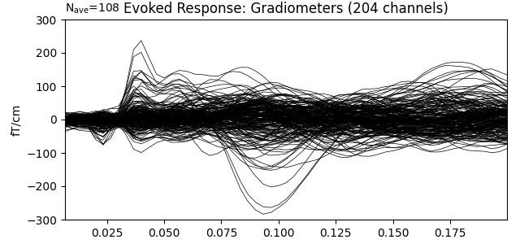
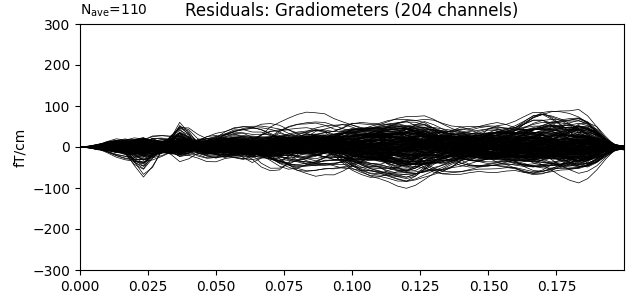

Note
Click here to download the full example code
Compute iterative reweighted TF-MxNE with multiscale time-frequency dictionary¶
The iterative reweighted TF-MxNE solver is a distributed inverse method based on the TF-MxNE solver, which promotes focal (sparse) sources 2. The benefits of this approach are that:
it is spatio-temporal without assuming stationarity (source properties can vary over time),
activations are localized in space, time, and frequency in one step,
the solver uses non-convex penalties in the TF domain, which results in a solution less biased towards zero than when simple TF-MxNE is used,
using a multiscale dictionary allows to capture short transient activations along with slower brain waves 1.
# Author: Mathurin Massias <mathurin.massias@gmail.com>
# Yousra Bekhti <yousra.bekhti@gmail.com>
# Daniel Strohmeier <daniel.strohmeier@tu-ilmenau.de>
# Alexandre Gramfort <alexandre.gramfort@inria.fr>
#
# License: BSD (3-clause)
import os.path as op
import mne
from mne.datasets import somato
from mne.inverse_sparse import tf_mixed_norm, make_stc_from_dipoles
from mne.viz import plot_sparse_source_estimates
print(__doc__)
Load somatosensory MEG data
data_path = somato.data_path()
subject = '01'
task = 'somato'
raw_fname = op.join(data_path, 'sub-{}'.format(subject), 'meg',
'sub-{}_task-{}_meg.fif'.format(subject, task))
fwd_fname = op.join(data_path, 'derivatives', 'sub-{}'.format(subject),
'sub-{}_task-{}-fwd.fif'.format(subject, task))
# Read evoked
raw = mne.io.read_raw_fif(raw_fname)
raw.pick_types(meg=True, eog=True, stim=True)
events = mne.find_events(raw, stim_channel='STI 014')
reject = dict(grad=4000e-13, eog=350e-6)
event_id, tmin, tmax = dict(unknown=1), -0.5, 0.5
epochs = mne.Epochs(raw, events, event_id, tmin, tmax, reject=reject,
baseline=(None, 0))
evoked = epochs.average()
evoked.crop(tmin=0.0, tmax=0.2)
# Compute noise covariance matrix
cov = mne.compute_covariance(epochs, rank='info', tmax=0.)
del epochs, raw
# Handling forward solution
forward = mne.read_forward_solution(fwd_fname)
Out:
Opening raw data file /home/circleci/mne_data/MNE-somato-data/sub-01/meg/sub-01_task-somato_meg.fif...
Range : 237600 ... 506999 = 791.189 ... 1688.266 secs
Ready.
111 events found
Event IDs: [1]
Not setting metadata
Not setting metadata
111 matching events found
Setting baseline interval to [-0.49948803289596966, 0.0] sec
Applying baseline correction (mode: mean)
0 projection items activated
Rejecting epoch based on EOG : ['EOG 061']
Loading data for 111 events and 301 original time points ...
Rejecting epoch based on EOG : ['EOG 061']
1 bad epochs dropped
Computing rank from data with rank='info'
MEG: rank 64 after 0 projectors applied to 306 channels
Setting small MEG eigenvalues to zero (without PCA)
Reducing data rank from 306 -> 64
Estimating covariance using EMPIRICAL
Done.
Number of samples used : 16610
[done]
Reading forward solution from /home/circleci/mne_data/MNE-somato-data/derivatives/sub-01/sub-01_task-somato-fwd.fif...
Reading a source space...
[done]
Reading a source space...
[done]
2 source spaces read
Desired named matrix (kind = 3523) not available
Read MEG forward solution (8155 sources, 306 channels, free orientations)
Source spaces transformed to the forward solution coordinate frame
Run iterative reweighted multidict TF-MxNE solver
alpha, l1_ratio = 20, 0.05
loose, depth = 0.9, 1.
# Use a multiscale time-frequency dictionary
wsize, tstep = [4, 16], [2, 4]
n_tfmxne_iter = 10
# Compute TF-MxNE inverse solution with dipole output
dipoles, residual = tf_mixed_norm(
evoked, forward, cov, alpha=alpha, l1_ratio=l1_ratio,
n_tfmxne_iter=n_tfmxne_iter, loose=loose,
depth=depth, tol=1e-3,
wsize=wsize, tstep=tstep, return_as_dipoles=True,
return_residual=True)
Out:
Converting forward solution to surface orientation
No patch info available. The standard source space normals will be employed in the rotation to the local surface coordinates....
Converting to surface-based source orientations...
[done]
Computing inverse operator with 306 channels.
306 out of 306 channels remain after picking
Selected 306 channels
Creating the depth weighting matrix...
Applying loose dipole orientations to surface source spaces: 0.9
Whitening the forward solution.
Computing rank from covariance with rank=None
Using tolerance 3.6e-12 (2.2e-16 eps * 306 dim * 53 max singular value)
Estimated rank (mag + grad): 64
MEG: rank 64 computed from 306 data channels with 0 projectors
Setting small MEG eigenvalues to zero (without PCA)
Creating the source covariance matrix
Adjusting source covariance matrix.
Whitening data matrix.
dgap 9.89e+01 :: p_obj 289.000835 :: d_obj 190.083203 :: n_active 247
dgap 1.27e+01 :: p_obj 253.327890 :: d_obj 240.582652 :: n_active 132
Iteration 10 :: n_active 82
dgap 4.53e+00 :: p_obj 250.707285 :: d_obj 246.182101
dgap 3.18e+00 :: p_obj 250.589468 :: d_obj 247.408712 :: n_active 76
Iteration 10 :: n_active 60
dgap 1.82e+00 :: p_obj 250.243688 :: d_obj 248.420556
Iteration 20 :: n_active 55
dgap 1.67e+00 :: p_obj 250.094971 :: d_obj 248.420556
Iteration 30 :: n_active 48
dgap 1.57e+00 :: p_obj 249.991067 :: d_obj 248.420556
Iteration 40 :: n_active 43
dgap 1.49e+00 :: p_obj 249.936498 :: d_obj 248.442467
Iteration 50 :: n_active 43
dgap 1.08e+00 :: p_obj 249.906871 :: d_obj 248.829870
Iteration 60 :: n_active 43
dgap 8.70e-01 :: p_obj 249.887205 :: d_obj 249.017223
Iteration 70 :: n_active 43
dgap 7.24e-01 :: p_obj 249.872107 :: d_obj 249.148583
dgap 1.11e+00 :: p_obj 249.872107 :: d_obj 248.762424 :: n_active 43
Iteration 10 :: n_active 44
dgap 5.94e-01 :: p_obj 249.854012 :: d_obj 249.259629
dgap 5.94e-01 :: p_obj 249.854012 :: d_obj 249.259629 :: n_active 44
Convergence reached!
Iteration 1: active set size=44, E=659.867870
Iteration 10 :: n_active 8
dgap 4.46e+00 :: p_obj 275.043596 :: d_obj 270.587841
Iteration 20 :: n_active 8
dgap 1.87e+00 :: p_obj 274.722230 :: d_obj 272.856399
Iteration 30 :: n_active 8
dgap 8.29e-01 :: p_obj 274.678013 :: d_obj 273.849283
dgap 8.29e-01 :: p_obj 274.678013 :: d_obj 273.849283 :: n_active 8
Convergence reached!
Iteration 2: active set size=8, E=335.966495
Iteration 10 :: n_active 5
dgap 2.73e+00 :: p_obj 239.215341 :: d_obj 236.481796
Iteration 20 :: n_active 5
dgap 9.17e-01 :: p_obj 239.095509 :: d_obj 238.178504
Iteration 30 :: n_active 5
dgap 4.77e-01 :: p_obj 239.068507 :: d_obj 238.591286
dgap 4.77e-01 :: p_obj 239.068507 :: d_obj 238.591286 :: n_active 5
Convergence reached!
Iteration 3: active set size=5, E=298.546285
Iteration 10 :: n_active 5
dgap 3.06e-01 :: p_obj 223.133013 :: d_obj 222.826666
dgap 3.06e-01 :: p_obj 223.133013 :: d_obj 222.826666 :: n_active 5
Convergence reached!
Iteration 4: active set size=5, E=295.194637
Convergence reached after 3 reweightings!
Debiasing converged after 551 iterations max(|D - D0| = 6.235933e-07 < 1.000000e-06)
[done]
Generate stc from dipoles
stc = make_stc_from_dipoles(dipoles, forward['src'])
plot_sparse_source_estimates(
forward['src'], stc, bgcolor=(1, 1, 1), opacity=0.1,
fig_name=f"irTF-MxNE (cond {evoked.comment})")
Out:
Converting dipoles into a SourceEstimate.
[done]
Total number of active sources: 5
Show the evoked response and the residual for gradiometers
ylim = dict(grad=[-300, 300])
evoked.copy().pick_types(meg='grad').plot(
titles=dict(grad='Evoked Response: Gradiometers'), ylim=ylim)
residual.copy().pick_types(meg='grad').plot(
titles=dict(grad='Residuals: Gradiometers'), ylim=ylim)
- 
- 
References¶
- 1
Yousra Bekhti, Daniel Strohmeiery, Mainak Jas, Roland Badeau, and Alexandre Gramfort. M/EEG source localization with multi-scale time-frequency dictionaries. In Proceedings of PRNI-2016, 1–4. Trento, 2016. IEEE. doi:10.1109/PRNI.2016.7552337.
- 2
Daniel Strohmeier, Alexandre Gramfort, and Jens Haueisen. MEG/EEG Source Imaging with a Non-Convex Penalty in the Time-Frequency Domain. In 2015 International Workshop on Pattern Recognition in NeuroImaging, 21–24. June 2015. doi:10.1109/PRNI.2015.14.
Total running time of the script: ( 0 minutes 23.960 seconds)
Estimated memory usage: 355 MB